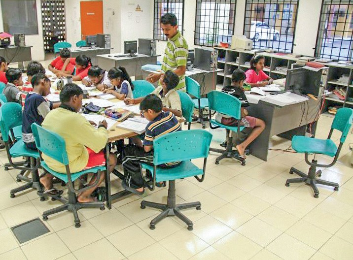
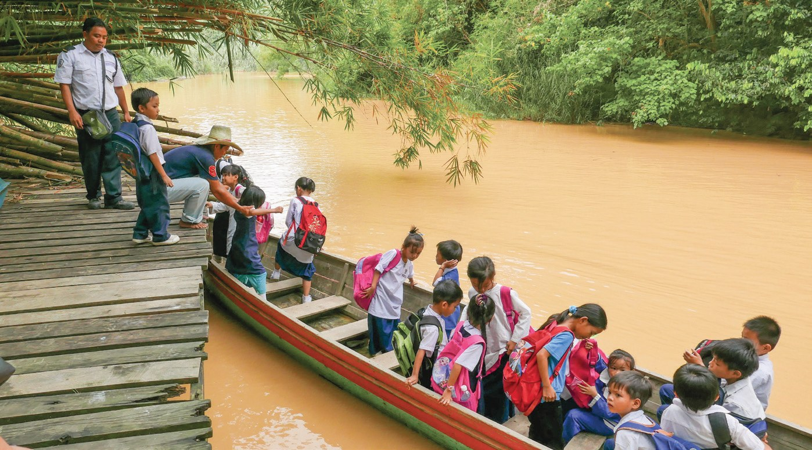
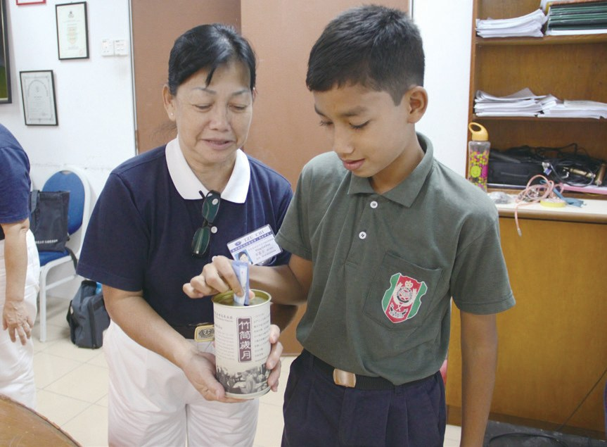
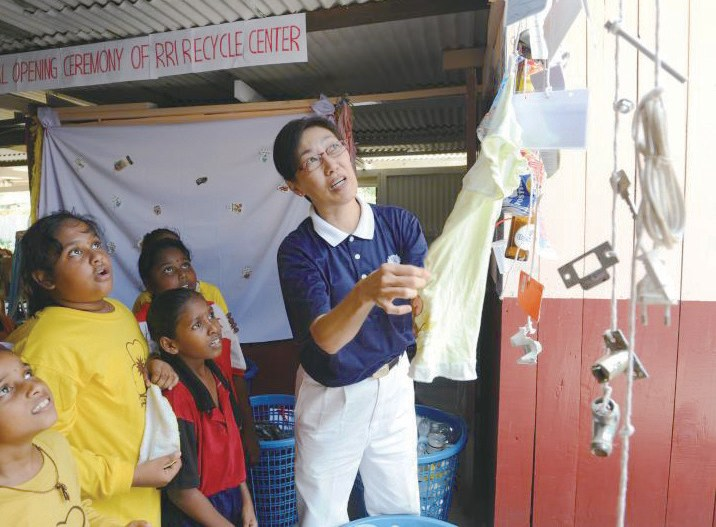
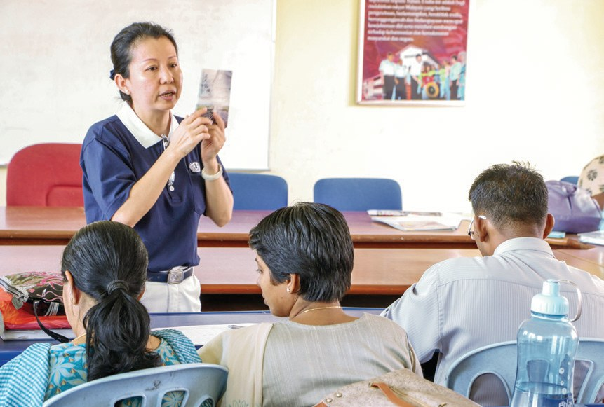
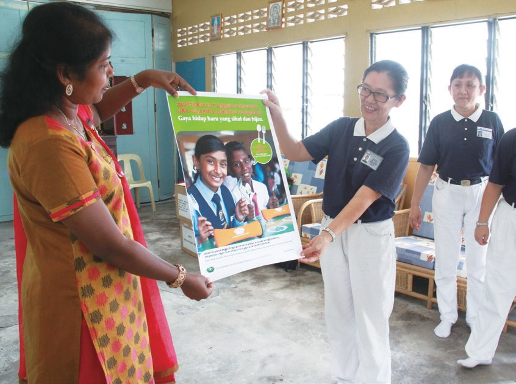
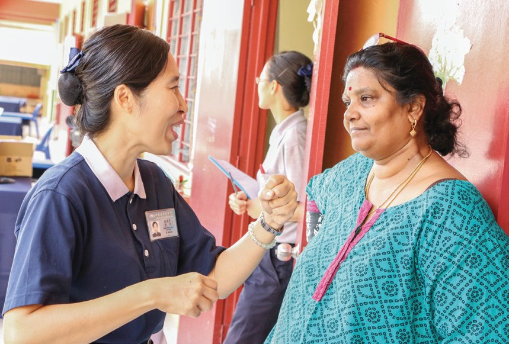
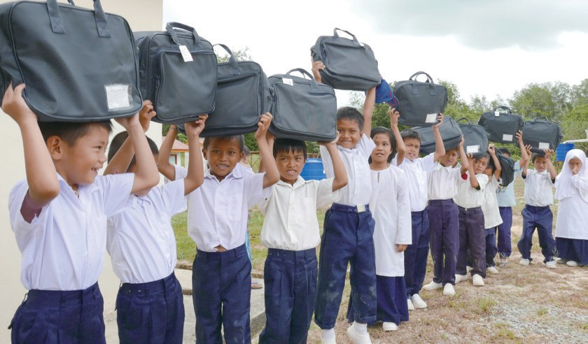

美善援助
安心就學
孩子餓著肚子，還讀得進書嗎？

先別急著下結論，讀完再說說你的想法～
這一篇講「幸福校園計劃」：慈濟走進淡米爾文小學和沙巴偏鄉學校，補助孩子的餐費、交通費，還開課後輔導班。
後來，受幫助的學校也開始捧竹筒、做環保，從手心向上，變成手心向下。
下面是原書的節錄，紅色底線是我們替你標出的轉折點。
讀之前：一個孩子讀不好書，你覺得最常見的原因是什麼？
從助學金到幸福校園
淡米爾文小學缺什麼？志工家訪時看見了什麼？閱讀引導
雖然政府有補助淡小，但由於補助款不多，經常入不敷出，校園內設備年久失修、師資缺乏，孩童亦無法有安心的就學環境，幸福校園計劃即是由此困境而生。

孩子在家裡又怎樣？
發現受助學童的家庭困境，家長連基本的三餐都無法為孩子準備，何況繳交學雜費、交通費，還有校服、校鞋及文具等額外的就學物品。
許多學生幾乎被迫輟學或曠課，即使能上課也是餓著肚子，對學習造成很大的影響。

怎麼讀得下書……
猜一猜閱讀引導
2011年4月，志工為了瞭解學生的需要，一共拜訪了多少間學校？
此計劃是由校方推薦名單，並交由慈濟志工實際家訪與評估，主要針對交通及食物做補助。
慈濟的補助計劃雖然解決了經濟上的負擔，但孩子們因過去的缺課時數過多，或父母無法指導課業，而跟不上課業進度。
功課還是跟不上？
2013年，慈濟整合餐費、交通費及課後輔導班的三項補助，統一稱之為「幸福校園計劃」。

三樣合在一起！
每天八令吉的伙食
補習班、食堂、長舟，各自改變了什麼？閱讀引導
雖然參與計劃的每位學生每日只需八令吉的生活費，但三個月下來，就需要六百多令吉，對大多從事勞力工作的家長來說，是一筆龐大的費用。

同年9月，小六鑑定考試放榜時，辛炳律淡米爾文小學成績斐然，19位參與考試的學生全部過關，順利升上中學，成績也比往年進步了百分之二十。

全部過關！
她經常看到孩子臉色蒼白，或是反應肚子餓到不舒服。獲得補助後，學校食堂會準備如炒米粉、熱飲、水果等等有營養的食物，讓孩子們在學校不再挨餓，能夠安心學習。

不再挨餓了！
在沙巴百淡地區，有一群孩子，天還未亮，就得走上一段泥濘的道路，前往碼頭搭長舟上學，有時無錢搭船，只得行走於崎嶇難行的山林間，等走到學校時，也已經是放學時間了……
已經放學了！

丹紐說，慈濟還沒補助兄妹倆的交通費前，他們一個星期只有兩天有錢坐長舟去上學。
「現在，我和妹妹可以天天去讀書了，我們都覺得很幸福！以前，我的成績不是很好，但今年，我已經考進了前十名。」
獲得慈濟補助後，丹紐表示・p.224儘管天還未亮就要到碼頭，而且舟上連伸腳的空間都沒有，下雨時，甚至無棚遮雨，可是對他而言，只要能夠上學，這些都不算什麼。
他也不覺得苦。
慈濟志工獲知學校的窘境後，在極短的時間內捐贈一千張新椅子給學校，解決校方的問題。
一仙、五仙的愛心箱
學校得到幫助後，想做點什麼回饋。閱讀引導
校長拉潔德拉有感於慈濟推動課輔計劃和種種援助，而認領了10支竹筒，並製作「愛心箱」，帶動全校學生每日愛心捐款，來回饋慈濟對他們的關懷。

2017年，一所淡米爾文小學的師生做了感恩卡送給志工，老師們也動起來募款。
「我們會跟學生說明，把剩下的零錢投進箱裡，這樣不只不會影響家裡的經濟負擔，還能讓善行變成習慣。」
樸妮妲老師表示・p.225行善變成習慣！
為了回饋慈濟，該校副校長佳尼斯瓦麗主動建議要在校園設置環保站。

環保觀念最主要是透過資源回收，讓學生懂得垃圾和資源的分別，也間接讓他們整理居家環境，還可以將回收得來的費用回饋慈濟，或是幫助校內的清貧學子。
還能幫助同校的同學！
「環保餐具，就不像那些用了就要丟的一次性餐具，我很高興自己，可以為環境保護盡一分力。」
學生亞林德藍說・p.227手心向下
一位不缺席的志工、一位退休老師、一位副校長。閱讀引導
初推動時，由於學校老師不瞭解慈濟，同時也懷疑慈濟人前來的目的，所以拒志工於千里之外。然而吳翠玲秉持誠以待人的心，一路陪伴學校老師解決所面對的問題，成為老師的後盾，讓他們逐漸信任慈濟人。
她還是一直來。

慈濟志工陳美聰（慈任）是一位退休教師。參與幸福校園計劃的校訪，讓她重新發揮老師的本能，也找回身為老師的喜悅。

因為見苦、懂得惜福，陳美聰學會放下過往內心的埋怨和執著，讓她現在的生活過得輕安自在。
自己也放下了。
她認為學生不能長期做受助者，應該學習自給自助，甚至幫助他人。她效仿慈濟「竹筒歲月」精神，把竹筒帶入每一班，讓學生學習以小錢行善，灌輸學生在受人幫助時，亦可做一位手心向下的人。

多年來的互動讓她觀察到，學校只是從課本灌輸品德教育，而慈濟卻是將教育付諸於行動中，引導學生改變，讓她十分感動，也更願意付出。
- 8,219人次餐費補助p.232
- 15,749人次交通費補助p.232
- 6,461人次課業輔導p.232

上人感恩馬來西亞慈濟人推動幸福校園計劃……慈濟補助的食物餐費，真的能幫到這些沒錢吃飯的孩子。
原文・p.232停一停：誰讓你記住了？閱讀引導
選一位你印象最深的人。沒有標準答案。
有人天天坐長舟，有人捧竹筒，有人一直不缺席。哪一位讓你最有感覺？

一起回頭看看吧～
回望
依本章原文整理，每一條都標了原書頁碼。閱讀引導
背後原因
為什麼要三項合一

小川只補助學費，為什麼不夠？
- 沒有三餐
家長連基本的三餐都無法為孩子準備。p.219
- 跟不上進度
缺課時數過多，或父母無法指導課業。p.220
- 幸福校園計劃
整合餐費、交通費及課後輔導三項補助。p.220
後續發展
幸福校園一路走來

小禾從助學金開始，計劃怎樣長大？
- 1997
開始實施助學金計劃。p.219
- 2008
正名新芽助學金，志工主動拜訪學校。p.219
- 2011
拜訪539間學校；辛炳律淡小19人全過關。p.220–221
- 2013
三項補助統一為「幸福校園計劃」。p.220
- 2014
百淡補助長舟交通費；贈送環保餐具。p.223、p.226
- 2019
計劃轉型，改為直接濟助案家、每月家訪。p.232
學校的改變
以前和後來
小川幸福校園帶來了什麼？
- 餓著肚子上課食堂有營養的食物p.219、p.222
- 一週只有兩天能坐長舟天天去讀書，考進前十名p.223–224
- 老師拒志工於千里之外逐漸信任慈濟人p.228
- 學生做受助者竹筒帶入每一班p.230
以上只整理本章寫到的事；書裡沒寫到的，我們不替它下結論。
回頭看讀前的選擇閱讀引導
諾萊妮老師常看到孩子臉色蒼白、肚子餓（p.222）；丹紐一個星期只有兩天有錢坐長舟（p.223）；有些孩子父母無法指導課業（p.220）。三樣都是真的，所以計劃把三項補助合在一起。
為什麼老師還要孩子每天捐？
只有你自己看得到喔！
準備好了就一起出發～